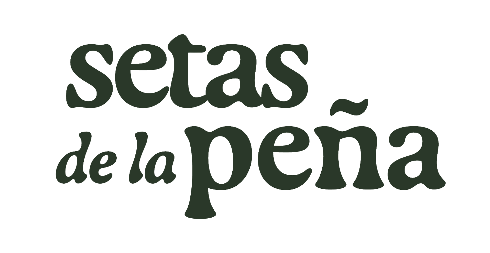

El ingrediente
Nombre, silueta y textura. Cada especie tiene una forma de entrar en la cocina.

Identidad comercial · 1.1 / 2026
Tenjo · Cundinamarca · Colombia
Del micelio
a la mesa.
Hongos para cocinar con criterio.

Ingrediente. Preparación. Origen.
Chefs primero. También en casa.
01 / La marca
Hongos desde Tenjo. Láminas para reconocerlos. Ideas para llevarlos a la cocina.
El conocimiento empieza en la especie y encuentra su lugar en el plato: shiitake con maíz, coco o plátano.
Primero hablamos a chefs y equipos de cocina: preparación, cantidad y consulta. Quienes cocinan en casa encuentran la misma claridad a través de las recetas. La información de una cosecha se confirma por separado.
Nombre, silueta y textura. Cada especie tiene una forma de entrar en la cocina.
Ideas concretas, ingredientes cercanos y cantidades que se pueden entender.
Un lugar y un proceso contados con información que podemos comprobar.
02 / Investigación y decisiones
Diez marcas, cinco casos tipográficos y una decisión: unir el conocimiento del hongo con la imaginación de una cocina. Conservamos Gaya + IBM y nuestras ilustraciones.
Especie y preparación
Perfil y técnica junto al nombre. Para Setas: lámina reconocible y una idea de plato.
Ver la ficha de especies ↗Conversación profesional
Preguntas de formato, volumen y entrega. Para Setas: preparar una consulta útil para el chef.
Ver la ruta profesional ↗Información del ingrediente
Sabor, uso y origen juntos. Para Setas: pocos datos, claros y respaldados.
Ver una ficha de producto ↗Aprendizaje accesible
Elegir según la intención. Para Setas: empezar por la preparación.
Ver el referente ↗Contexto colombiano
Casa y negocio tienen rutas distintas. Para Setas: una marca, dos maneras de entrar.
Ver la entrada para negocio ↗Jerarquía editorial
Título expresivo y categoría legible. Para Setas: Gaya da carácter; IBM ayuda a decidir.
Ver el caso tipográfico ↗Fuentes consultadas el 12 de octubre de 2026. Son observaciones de marca y propuestas de diseño; no se midieron ventas ni conversión. Leer investigación, límites y protocolo ↗
03 / La firma
La firma original seleccionada conserva la composición en dos líneas y la forma de las letras. La ilustración de la peña puede acompañarla en el emblema horizontal.
Conservar sus proporciones y composición.

Ilustración original junto a la firma.
Conservar espacio libre alrededor de la firma.
Comprobar el tamaño en el soporte. Las variantes reducidas requieren desarrollo adicional.
Sin deformar, rotar ni añadir sombras. El PNG original es rasterizado.
04 / Tipos y pigmentos
Gaya / títulos
La textura también
es un ingrediente.
Lentinula edodes
IBM Plex Sans / lectura
Elegir por su textura.
Cocinar con intención.
Texto claro para instrucciones, consulta y navegación. Un cuerpo de lectura de al menos 16 px.
IBM Plex Mono / datos
300 g
×1 / ×2 / ×3
Cantidades de receta, rótulos y registros. Nunca un párrafo completo en mayúsculas.
#FAF8F3#1A1410#2E3B2F#B8614D#4E6A7APapel y tinta dominan; musgo identifica; terracota aparece puntualmente. Para texto pequeño de acento, usar terracota oscura #8A3E2D. La reproducción de imprenta requiere perfil y prueba física.
05 / Ilustraciones

Grabado / especie
Hericium erinaceus
Organismo completo, nombre y contorno reconocibles. Ilustración de especie.

Gouache con lápiz / cocina
Plato completo e ingredientes reconocibles sobre papel. Ilustración culinaria.
Ilustración como lenguaje principal. Fotografía propia solo cuando aporta evidencia de una cosecha o proceso. Sin hojas, flores ni fotografía de stock para representar hongos o cultivo.
06 / La voz
Para una cocina profesional
¿Para qué plato y qué servicio? Con cantidad, ciudad y fecha revisamos disponibilidad. Presentación y condiciones se confirman al consultar.
Consultar para mi cocina ↗Para cocinar en casa
Shiitake, maíz dorado y aguacate. Primero la receta; después, la cantidad para la consulta.
Quiero cocinar esto ↗«Disponibilidad por confirmar. Consultar antes de planear el pedido.»
«Adaptación de fuentes publicadas, pendiente de prueba en cocina.»
Especie, textura, receta, cantidad, cosecha y origen. Explicar los términos que ayudan a decidir.
Las promesas de stock, certificación o beneficios medicinales no se deducen de una imagen.
07 / En uso
Composiciones de referencia para adaptar con datos reales. La especie y su uso entran primero; la información comercial se confirma.
Ficha para cocina / maqueta
Ingrediente / 001
Lentinula edodes
¿Qué lugar tiene en el plato?
Prepara un mensaje sin enviarlo. Canal comercial por confirmar.
Frente de empaque / maqueta
Lentinula edodes
Tenjo · Colombia
Origen del proyecto
Completar datos, responsable, conservación y requisitos aplicables antes de imprimir. Sin lote, peso de venta ni QR ficticios.
Tarjeta de receta / maqueta
En la cocina / 01
300 g de shiitake · receta base
Maíz dorado, aguacate y limón.
Ver ingredientes y pasos ↗Ilustración culinaria. Adaptación pendiente de prueba en cocina.
La receta invita a preparar; la consulta confirma cantidad y condiciones. Mantener las fuentes y el aviso de estimación.
08 / Lámina, nota y plato
Dos piezas que pueden acompañarse en un cuaderno, una presentación o una publicación. El grabado identifica; el gouache invita a preparar. Maquetas para revisión interna.
Lentinula edodes
Del ingrediente al plato
Conocer la seta.
Imaginar el plato.
Maíz dorado, aguacate y limón.
300 g de shiitake · receta base
Ver ingredientes y pasos ↗09 / Recursos
Firma original en PNG transparente y emblema horizontal con imágenes PNG incrustadas en SVG. La versión inversa y una firma vectorial fiel siguen pendientes.